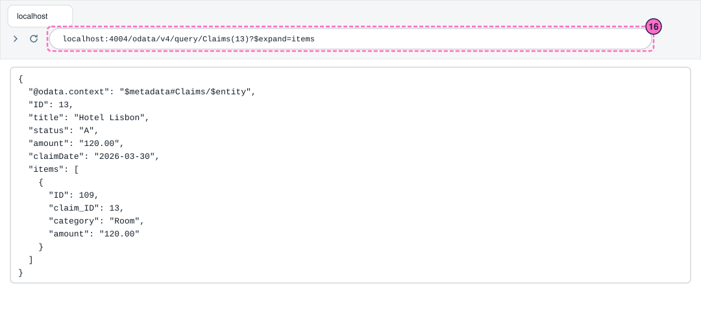
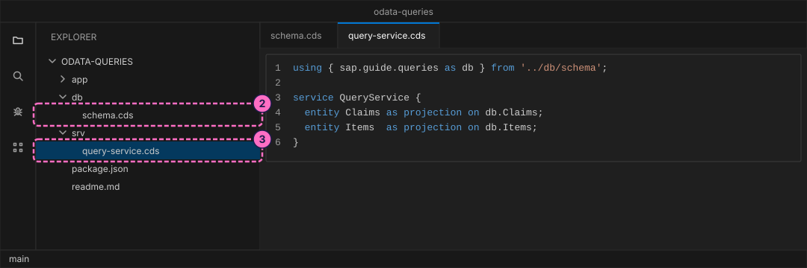
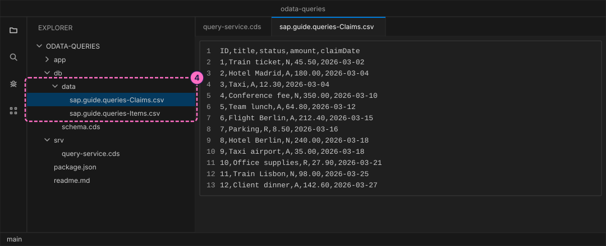
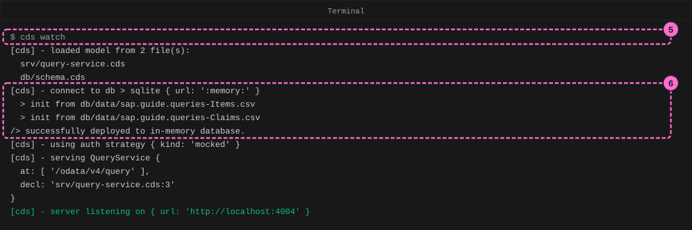
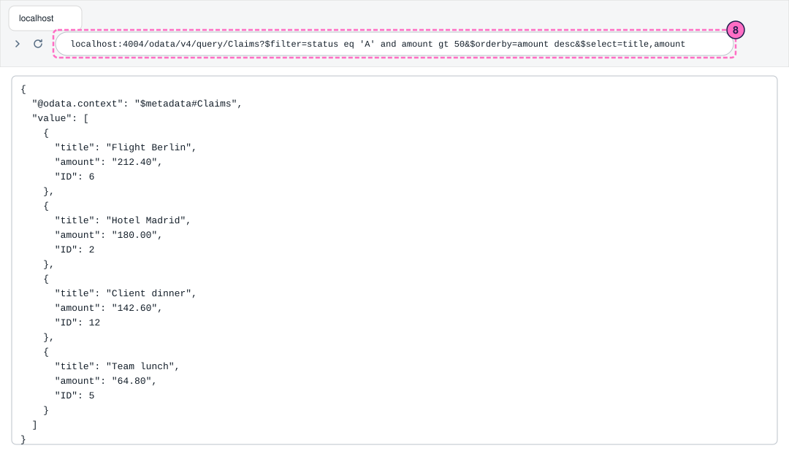
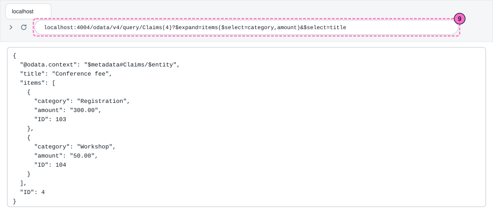
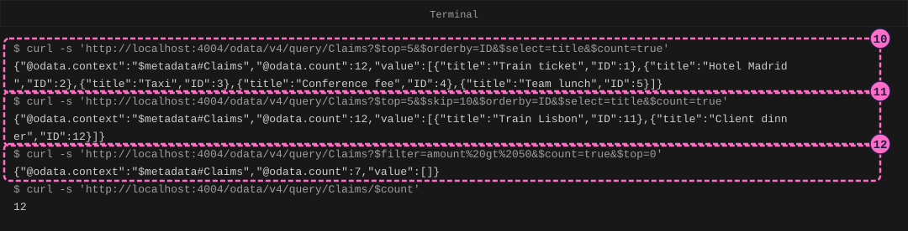
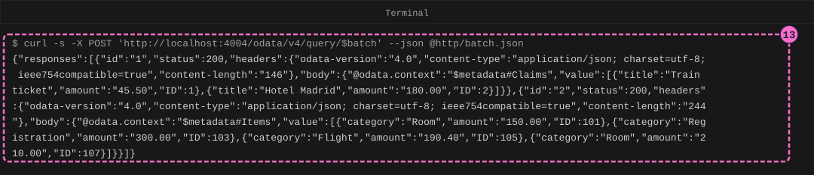
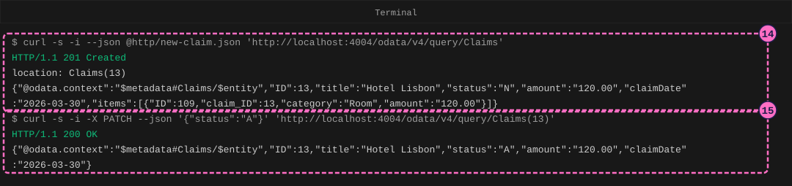

SAP Guide: Query OData Services
|
This content was generated with the assistance of AI and should be verified against the official documentation before being relied on in production. |
Checked on 2026-11-13 against CAP Node.js 10.2 (@sap/cds 10.2.2, @sap/cds-dk 10.2.1), OData V4 and Node.js 24.21 with curl 8.7.
What you build
This is a teaching model built with CAP. It is not SAP S/4HANA or SAP SuccessFactors and does not reproduce their screens.
You build a small OData service for expense claims, with twelve claims and a few items, and you ask it questions the way an app or a script would. Every question is a web address with query options after the question mark: pick the fields you want, keep only the rows that match, sort them, take one page, count them, pull in the related items, and send several questions in one request. At the end you write: you create a claim with an item and change one of its fields.

Before you start
-
No account is needed: the CAP tools install from the public npm registry without signing in. Installing
@sap/cds-dkand@sap/cdsmeans accepting the SAP Developer License Agreement, version 3.2, which the packages state themselves; the lab README names it. -
Install Node.js 22.12 or newer, and
cds-dkas in Your First CAP Service (npm install --global @sap/cds-dk). That guide also shows the editor, the terminal and the browser that this one uses. -
Use curl 7.82 or newer (
curl --version), because the steps send a file withcurl --json, and a shell such as bash or zsh, where single quotes keep the text as it is. -
Read OData and SAP Gateway first, or at least know that a query option such as
$filtershapes the answer on the server. -
The entities, the claims and the amounts are this guide’s own made-up data. The option names (
$select,$filter,$orderby,$top,$skip,$count,$expand) come from the OData V4.01 URL conventions that the Sources list. -
The figures are drawings of the editor, the terminal and the browser, not screenshots. A highlighted box with a number marks the file, the address or the command of the step with the same number. The answers in the figures are the real ones from the lab; the figures show only the default address
localhost:4004.
Steps
Create the project and the model
-
Create the project, go into its folder and install its dependencies (the first guide explains these commands):
cds init odata-queries --nodejs cd odata-queries npm installcds initprintsSuccessfully initialized CAP project. -
Create the file
db/schema.cds. It describes two entities. A claim has a number, a title, a one-letter status (Nnew,Aapproved,Rrejected), an amount and a date. An item is one line of a claim, such as a room or a breakfast. TheCompositionsays that items belong to their claim, so CAP deletes them with it and accepts them inside a new claim. The keys are plain integers to keep the addresses short.namespace sap.guide.queries; entity Claims { key ID : Integer; title : String(80); status : String(1) default 'N'; amount : Decimal(9,2); claimDate : Date; items : Composition of many Items on items.claim = $self; } entity Items { key ID : Integer; claim : Association to Claims; category : String(20); amount : Decimal(9,2); }Source: CAP: Domain Modeling
-
Create the file
srv/query-service.cds. The service lists the two entities that outsiders may use. CAP serves it as an OData V4 service at/odata/v4/query, derived from the service name.using { sap.guide.queries as db } from '../db/schema'; service QueryService { entity Claims as projection on db.Claims; entity Items as projection on db.Items; }
Add the data and start the server
A query is only interesting when there is enough data to filter and to page through, so the claims come from a file.
-
Create the folder
db/datawith two CSV files. The file names are the namespace, a dash and the entity name, and the first row names the fields. In the items file,claim_IDis the number of the claim the item belongs to. Firstsap.guide.queries-Claims.csv, with twelve claims:ID,title,status,amount,claimDate 1,Train ticket,N,45.50,2026-03-02 2,Hotel Madrid,A,180.00,2026-03-04 3,Taxi,A,12.30,2026-03-04 4,Conference fee,N,350.00,2026-03-10 5,Team lunch,A,64.80,2026-03-12 6,Flight Berlin,A,212.40,2026-03-15 7,Parking,R,8.50,2026-03-16 8,Hotel Berlin,N,240.00,2026-03-18 9,Taxi airport,A,35.00,2026-03-18 10,Office supplies,R,27.90,2026-03-21 11,Train Lisbon,N,98.00,2026-03-25 12,Client dinner,A,142.60,2026-03-27Then
sap.guide.queries-Items.csv, with items for four of the claims (the other claims have none):ID,claim_ID,category,amount 101,2,Room,150.00 102,2,Breakfast,30.00 103,4,Registration,300.00 104,4,Workshop,50.00 105,6,Flight,190.40 106,6,Baggage,22.00 107,8,Room,210.00 108,8,Breakfast,30.00Source: CAP: Providing Initial Data

-
In the terminal, in the project folder, start the server. Leave it running: it restarts when you save a file, and each restart reloads the CSV files, so a claim that you create later disappears.
cds watch -
Read the log. CAP loads the two model files, creates an in-memory SQLite database, fills it from the two CSV files, and reports
server listening on { url: 'http://localhost:4004' }. The lineserving QueryServicenames the path/odata/v4/query. If another program already uses port 4004,cds watchsays so and offers another port; use that port in every address below.
The figure leaves out the banner that
cds watchprints before the first line.
Shape the answer in the browser
Every address below starts with http://localhost:4004/odata/v4/query/. The part after the question mark is the query. Options are separated by &, and a browser fills in the spaces and quotes for you.
-
Ask for fewer fields and fewer rows.
$selectnames the fields, and$topkeeps the first rows. Open http://localhost:4004/odata/v4/query/Claims?$select=title,amount&$top=3. The answer holds three claims with only the title and the amount; the keyIDis part of every answer, even when$selectdoes not name it.{"@odata.context":"$metadata#Claims","value":[{"title":"Train ticket","amount":"45.50","ID":1},{"title":"Hotel Madrid","amount":"180.00","ID":2},{"title":"Taxi","amount":"12.30","ID":3}]}Your browser may show this answer on one line, as above, or formatted. The data is the same.
-
Keep only the rows that match and sort them.
$filtertakes a condition built from field names, comparison words (eqequal,gtgreater than) andand.$orderbysorts,descfor descending. Open the address below. It asks for the approved claims above 50, the largest first. Four claims match and the answer lists them from Flight Berlin (212.40) to Team lunch (64.80); the claims that are new or rejected, and the cheap ones, are left out.http://localhost:4004/odata/v4/query/Claims?$filter=status eq 'A' and amount gt 50&$orderby=amount desc&$select=title,amountSource: OData V4.01: URL Conventions

-
Pull in the related rows. Without
$expand, a client that wants a claim and its items has to ask twice.$expand=itemsadds the items to the claim, and the$selectinside the parentheses limits their fields. Open the address below. The answer is the claimConference feewith its two items inside it. A claim without items, such as number 1, answers"items":[].http://localhost:4004/odata/v4/query/Claims(4)?$expand=items($select=category,amount)&$select=titleSource: OData V4.01: URL Conventions

Page, count and batch with curl
A script sends the same addresses with curl. The shell needs two things from you: put the address in single quotes, so that the shell leaves the $ signs alone, and write a space as %20 (curl refuses an address with a raw space). Open a second terminal in the project folder, because the first one runs the server.
-
Take the first page of five claims.
$top=5is the page size,$orderby=IDmakes the order stable so that the pages do not overlap, and$count=trueadds@odata.count, the number of all claims, to the answer:curl -s 'http://localhost:4004/odata/v4/query/Claims?$top=5&$orderby=ID&$select=title&$count=true'The answer holds the claims 1 to 5 and
"@odata.count":12. -
Take the third page.
$skip=10passes over the first ten claims, so the page holds what is left, two claims. The count is still the total, 12:curl -s 'http://localhost:4004/odata/v4/query/Claims?$top=5&$skip=10&$orderby=ID&$select=title&$count=true' -
Count without reading the rows. With a filter,
$count=truecounts the rows that match, and$top=0returns none of them: seven claims are above 50. The path/$countanswers the plain number of all claims,12.curl -s 'http://localhost:4004/odata/v4/query/Claims?$filter=amount%20gt%2050&$count=true&$top=0' curl -s 'http://localhost:4004/odata/v4/query/Claims/$count'Source: OData V4.01: URL Conventions

-
Send two questions in one request. Each web request costs a round trip, so a screen that needs two lists can ask for both at once: a
$batchrequest packs several requests into onePOST. CAP accepts a JSON body for it. Createhttp/batch.json, where each request has anid, a method and an address relative to the service:{ "requests": [ { "id": "1", "method": "GET", "url": "Claims?$select=title,amount&$top=2&$orderby=ID" }, { "id": "2", "method": "GET", "url": "Items?$filter=amount gt 100&$select=category,amount" } ] }Post the file to the path
$batch. Each answer inresponsescarries theidof its request and its own status: the first holds two claims and the second the four items above 100.curl -s -X POST 'http://localhost:4004/odata/v4/query/$batch' --json @http/batch.jsonSource: OData JSON Format V4.01

Write data
-
Create a claim with one item in a single request. The body is a JSON document; the
itemslist inside it creates the item together with its claim (a deep insert). Createhttp/new-claim.json:{ "ID": 13, "title": "Hotel Lisbon", "amount": 120.00, "claimDate": "2026-03-30", "items": [ { "ID": 109, "category": "Room", "amount": 120.00 } ] }--jsonsends the file as the body with the right headers, which makes the request aPOST. The answer is201 Created. Itslocationheader names the new claim,Claims(13), and the body is the claim as stored: CAP filled thestatuswith its defaultN.curl -s -i --json @http/new-claim.json 'http://localhost:4004/odata/v4/query/Claims'Source: CAP: Serving OData APIs
-
Change one field. A
PATCHsends only the fields that change. The answer is200 OKwith the claim, and the status is nowA:curl -s -i -X PATCH --json '{"status":"A"}' 'http://localhost:4004/odata/v4/query/Claims(13)'
The figure leaves out the headers
X-Correlation-ID,Content-Length,Date,ConnectionandKeep-Alive, and shows only the status line and thelocationheader of the first answer. -
Read the claim back with its item, to see that the write is stored. Open http://localhost:4004/odata/v4/query/Claims(13)?$expand=items in the browser. The answer is the claim Hotel Lisbon with the status
Aand its itemRoom; it is the answer shown at the top of this page.
Check the result
-
The first terminal shows
server listening on { url: 'http://localhost:4004' }and no line that starts with[ERROR]. -
Claims?$top=5&$skip=10&$orderby=ID&$count=trueholds two claims and the count 12. -
Claims(4)?$expand=itemsholds the two itemsRegistrationandWorkshop. -
The
POSTanswers201 Created, thePATCHanswers200 OKand the read-back shows the statusAwith one item.
Variations
-
Search inside a text field with a function:
Claims?$filter=contains(title,%27Taxi%27)&$select=titleanswers the claims Taxi and Taxi airport. -
Filter on the related rows:
Claims?$filter=items/any(i:i/amount%20gt%20100)&$select=titlekeeps the claims that have at least one item above 100. Add&$expand=items($select=category,amount)to see those items. -
Let a test check the queries. The lab project has
test/queries.test.js, which runs the queries of this guide against the service without a running server. In your project, install the test helper withnpm install --save-dev @cap-js/cds-test, create the file, and runnode --test. The tests pass.import cds from '@sap/cds' import { test } from 'node:test' import assert from 'node:assert' const { GET, POST, PATCH } = cds.test(import.meta.dirname + '/..') const base = '/odata/v4/query' test('$select returns only the named fields and the key', async () => { const { data } = await GET(`${base}/Claims?$select=title,amount&$top=1`) assert.deepEqual(data.value[0], { title: 'Train ticket', amount: '45.50', ID: 1 }) }) test('$filter and $orderby keep and sort the matching claims', async () => { const url = `${base}/Claims?$filter=status eq 'A' and amount gt 50` + '&$orderby=amount desc&$select=title' const { data } = await GET(url) assert.deepEqual(data.value.map((c) => c.title), ['Flight Berlin', 'Hotel Madrid', 'Client dinner', 'Team lunch']) }) test('$top and $skip page through the claims', async () => { const page = async (skip) => (await GET( `${base}/Claims?$top=5&$skip=${skip}&$orderby=ID&$count=true`)).data assert.equal((await page(0)).value.length, 5) const last = await page(10) assert.equal(last['@odata.count'], 12) assert.deepEqual(last.value.map((c) => c.ID), [11, 12]) }) test('$count=true with $top=0 returns the number and no rows', async () => { const { data } = await GET( `${base}/Claims?$filter=amount gt 50&$count=true&$top=0`) assert.equal(data['@odata.count'], 7) assert.equal(data.value.length, 0) assert.equal((await GET(`${base}/Claims/$count`)).data, 12) }) test('$expand returns the items inside each claim', async () => { const { data } = await GET(`${base}/Claims(4)?$expand=items($select=category)`) assert.deepEqual(data.items.map((i) => i.category), ['Registration', 'Workshop']) const none = await GET(`${base}/Claims(1)?$expand=items`) assert.deepEqual(none.data.items, []) }) test('$batch answers every request with its own status', async () => { const { data } = await POST(`${base}/$batch`, { requests: [ { id: '1', method: 'GET', url: 'Claims?$select=title&$top=2&$orderby=ID' }, { id: '2', method: 'GET', url: 'Claims(99)' }, ] }) assert.deepEqual(data.responses.map((r) => [r.id, r.status]), [['1', 200], ['2', 404]]) assert.equal(data.responses[0].body.value.length, 2) }) test('a write creates a claim and its item, a patch changes it', async () => { const created = await POST(`${base}/Claims`, { ID: 13, title: 'Hotel Lisbon', amount: 120, claimDate: '2026-03-30', items: [{ ID: 109, category: 'Room', amount: 120 }], }) assert.equal(created.status, 201) assert.equal(created.data.status, 'N') const patched = await PATCH(`${base}/Claims(13)`, { status: 'A' }) assert.equal(patched.status, 200) const { data } = await GET(`${base}/Claims(13)?$expand=items`) assert.equal(data.status, 'A') assert.equal(data.items.length, 1) }) -
The lab project’s
http/queries.httpholds the same requests for the Visual Studio Code REST Client extension.
What can go wrong
| Symptom | Cause | Fix |
|---|---|---|
|
The address has a raw space, for example |
Write the space as |
HTTP 400 with |
A |
Write |
HTTP 400 with |
|
Compare the name with the entity in |
HTTP 400 with |
|
Give a whole number. |
HTTP 404 with |
No claim has the key 99. |
Read |
HTTP 404 with |
The entity set is misspelled ( |
Use the names from |
HTTP 500 with |
The key 13 exists already, and the model gives no generated key. |
Post a new |
HTTP 400 with |
The JSON body of the |
Correct the file and send it again. |
The answer to the |
Another program answers on port 4004, not your service. |
Use the port that |
The shell prints |
The address is not in single quotes, so |
Put the whole address in single quotes. |
Clean up
Press Ctrl+C in the terminal to stop cds watch. The database lived only in memory, so the claim you created is already gone and there is nothing to delete.
Where to go next
-
Reference: OData and SAP Gateway.
-
Reference: Services and Custom Handlers in Node.js.
-
Previous guide: Your First CAP Service.